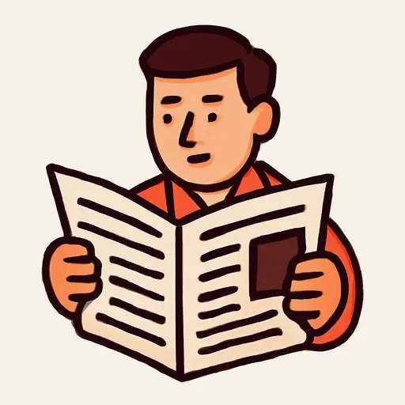

Черновик: урок написан, но преподаватель его ещё не вычитал.
Semana 9 · Día 2 — El presente regular: -ar, -er, -ir
Неделя 9 · День 2 — Настоящее время правильных глаголов: -ar, -er, -ir
Сегодня вы научитесь
- спрягать любой правильный глагол трёх типов: -ar, -er, -ir;
- рассказывать, что вы делаете каждый день: desayuno, leo, escribo, vivo;
- спрашивать ¿Qué haces por la mañana? и отвечать на этот вопрос.
1. Разминка (0–3 мин)
- Карточки: 10 слов (вчерашние и недельной давности).
- Вопрос по вчерашнему уроку: скажите вслух 9:30, 1:00 и 12:45. В одном из трёх — es, а не son. В каком?
2. Фонетика (3–6 мин)
-s второго лица не теряется никогда. В испанском «ты» и «он» различаются ровно одним звуком на конце — -s. Если его проглотить, фраза меняет лицо. Прочитайте пары вслух, нажимая на конечное -s:
| он / она | ты |
|---|---|
| trabaja | trabajas |
| come | comes |
| vive | vives |
| lee | lees |
| estudia | estudias |
| abre | abres |
Русский ослабляет и оглушает конец слова («год» → [гот]), поэтому испанское финальное -s хочется «съесть». Произносите его чётко, как в слове gracias: [грá-сьяс], а не [грá-сья].
🌎 В Андалусии (откуда Хавьер) и на Кубе конечное -s часто превращается в выдох: ¿comeh? Понимать это надо, повторять — нет: без -s «ты ешь» и «он ест» становятся одной и той же фразой. Запишите шесть пар и сравните.
3. Новое (6–16 мин)
Пример
Хавьер и Ольга переписываются днём: кто что делает по утрам. [AUDIO]
| Español | Русский |
|---|---|
| Javier: Olga, ¿qué haces por la mañana? | Ольга, что ты делаешь утром? |
| Olga: Desayuno en casa y leo las noticias. ¿Y tú? | Завтракаю дома и читаю новости. А ты? |
| Javier: Yo no desayuno en casa: bebo un café en el bar de la esquina. | Я не завтракаю дома: пью кофе в баре на углу. |
| Olga: ¿Y dónde comes? | А где ты обедаешь? |
| Javier: Comemos en la oficina, a las dos. | Мы обедаем в офисе, в два. |
| Olga: Nosotras comemos a la una, pero comemos muy rápido. | Мы обедаем в час, но обедаем очень быстро. |
| Javier: ¿Estudias español por la tarde? | Ты занимаешься испанским после обеда? |
| Olga: Sí, estudio una hora: leo, escribo y aprendo palabras. | Да, занимаюсь час: читаю, пишу и запоминаю слова. |
| Javier: ¡Y escribes muy bien! ¿Vives en el centro de Moscú? | И ты очень хорошо пишешь! Ты живёшь в центре Москвы? |
| Olga: No, vivo lejos. Vivimos en un piso mi hermana y yo. | Нет, живу далеко. Мы живём в квартире — сестра и я. |
Прочитайте вслух. Найдите в диалоге все формы глагола comer — их три, и одна из них повторяется (ответ в конце урока).
Объяснение
У русского глагола два спряжения и шесть личных форм: «работа-ю, работа-ешь, работа-ет, работа-ем, работа-ете, работа-ют». Эта идея вам не нужна в объяснении — она у вас уже есть. В испанском тоже шесть форм, но три спряжения, и узнаются они по последним двум буквам инфинитива: -ar, -er, -ir. Главная новость дня: -er и -ir различаются только в двух формах из шести.
| trabajar | comer | vivir | |
|---|---|---|---|
| yo | trabajo | como | vivo |
| tú | trabajas | comes | vives |
| él / ella / usted | trabaja | come | vive |
| nosotros / nosotras | trabajamos | comemos | vivimos |
| vosotros / vosotras | trabajáis | coméis | vivís |
| ellos / ellas / ustedes | trabajan | comen | viven |
Только окончания — так их легче увидеть:
| -ar | -er | -ir | |
|---|---|---|---|
| yo | -o | -o | -o |
| tú | -as | -es | -es |
| él / ella / usted | -a | -e | -e |
| nosotros | -amos | -emos | -imos |
| vosotros | -áis | -éis | -ís |
| ellos / ellas / ustedes | -an | -en | -en |
Три вещи, которые стоит заметить сразу:
- Форма «я» всегда -o, во всех трёх спряжениях: trabajo, como, vivo, leo, escribo, abro. Это самая надёжная форма испанского языка.
- -er и -ir совпадают везде, кроме nosotros и vosotros. Значит, учить надо не два спряжения, а одно плюс два исключения: comemos / vivimos, coméis / vivís.
- Местоимение (yo, tú, él) обычно опускают: окончание и так говорит, кто это. Trabajo en una empresa — «я работаю». Местоимение ставят только для противопоставления: Yo desayuno en casa, él desayuna en el bar.
Глаголы этого урока — все правильные: -ar: trabajar, estudiar, desayunar,
hablar · -er: comer, beber, leer, aprender · -ir: vivir, escribir, abrir.
И один вопрос-формула: ¿Qué haces? — «Что ты делаешь?» Глагол hacer почти правильный (haces, hace, hacemos, hacéis, hacen — как comer), но форма «я» у него особая, и о ней — на следующей неделе. Сегодня берите готовым сам вопрос:
¿Qué haces por la mañana? — ¿Qué hace Javier por la tarde?
⚠️ Контраст с русским
- Русский спрягает глагол по лицам и числам — ровно шесть форм, и вы делаете это не задумываясь: «живу, живёшь, живёт, живём, живёте, живут».
- Испанский делает то же самое, и это главный подарок недели: таблица из шести форм для вас — привычная вещь, а не новая идея. Разница только в том, что спряжений три и выбирает их инфинитив (-ar / -er / -ir), и в том, что местоимение можно (и нужно) опускать.
- Вы захотите сказать: ✗ vivemos, ✗ escribemos, ✗ abremos (потому что -er и -ir кажутся одним спряжением) → Правильно: ✅ vivimos, ✅ escribimos, ✅ abrimos. И осторожно с другой стороны: ✗ comimos — это не «мы едим», а «мы поели», прошедшее время. «Мы едим» — ✅ comemos.
Правило в одну строку: в nosotros и vosotros гласная окончания — та же, что в инфинитиве: comer → comemos, vivir → vivimos.
4. Практика (16–26 мин)
Упражнение А. Проспрягайте три глагола. Две формы каждого уже даны — по ним видно спряжение.
Модель: yo trabajo, tú trabajas, él trabaja, nosotros trabajamos, vosotros trabajáis, ellos trabajan
| estudiar | beber | abrir | |
|---|---|---|---|
| yo | estudio | abro | |
| tú | bebes | ||
| él / ella / usted | |||
| nosotros / as | estudiamos | ||
| vosotros / as | bebéis | ||
| ellos / ellas / ustedes | abren |
Упражнение Б. Дополните текст «Un día de Javier». Банк слов:
vive · desayuna · bebe · abre · trabaja · escribe · come · lee · aprende · estudiamos
Javier 1 en Sevilla, en un piso pequeño. No 2 en casa: 3 un café en el bar de la esquina. La oficina 4 a las nueve. Javier 5 en una empresa de software y 6 muchos correos electrónicos. A las dos 7 con sus compañeros de trabajo. Por la tarde 8 las noticias y 9 ruso: «Olga y yo 10 juntos (вместе) por internet».
Упражнение В. Переведите на испанский.
- Я живу в Москве, а Хавьер живёт в Севилье.
- Мы обедаем в два часа.
- Что ты делаешь утром?
- Вы (vosotros) читаете по-испански?
- Ольга пишет и запоминает слова.
- Мы пьём кофе в баре.
- Они не работают по вечерам.
- Мы живём в квартире в центре.
5. Выход (26–29 мин)
Проспрягайте 9 глаголов и напишите 10 фраз о своём распорядке.
Девять глаголов (по три на каждое спряжение), все шесть форм каждого:
-ar: trabajar · estudiar · desayunar -er: comer · beber · leer -ir: vivir · escribir · abrir
Потом — 10 фраз о себе, по одной на каждый глагол плюс одна свободная, и в каждой фразе время (вчерашний урок):
Desayuno a las siete y media. · Trabajo de nueve a seis. · Como a la una.
Проверьте в своих фразах две вещи: форма «я» кончается на -o, а местоимение yo стоит только там, где вы себя с кем-то сравниваете.
6. Итог (29–30 мин)
- [ ] Я спрягаю правильные глаголы на -ar, -er и -ir без таблицы.
- [ ] Я помню, что -er и -ir расходятся только в nosotros и vosotros.
- [ ] Я спрашиваю ¿Qué haces por la mañana? и отвечаю о своём дне.
- Добавьте слова дня в колоду карточек.
Словарь дня
| Español | Русский | Пример |
|---|---|---|
| desayunar | завтракать | Desayuno a las siete. |
| comer | есть; обедать (в Испании — главный приём пищи) | Comemos a las dos. |
| beber | пить | Javier bebe un café en el bar. |
| leer | читать | Olga lee las noticias. |
| aprender | выучивать, запоминать | Aprendo diez palabras cada día. |
| escribir | писать | Escribo un correo electrónico. |
| abrir | открывать; открываться | La oficina abre a las nueve. |
 las noticias |
новости | Olga lee las noticias por la mañana. |
| ¿Qué haces? | Что ты делаешь? | ¿Qué haces por la mañana? |
| la rutina | распорядок дня | Mi rutina es muy simple. |
Ответы
А.
| estudiar | beber | abrir | |
|---|---|---|---|
| yo | estudio | bebo | abro |
| tú | estudias | bebes | abres |
| él / ella / usted | estudia | bebe | abre |
| nosotros / as | estudiamos | bebemos | abrimos |
| vosotros / as | estudiáis | bebéis | abrís |
| ellos / ellas / ustedes | estudian | beben | abren |
Б. 1. vive · 2. desayuna · 3. bebe · 4. abre · 5. trabaja · 6. escribe · 7. come · 8. lee · 9. aprende · 10. estudiamos (подлежащее — Olga y yo, то есть nosotros: не estudian).
В. 1. Vivo en Moscú y Javier vive en Sevilla. · 2. Comemos a las dos. (Не comimos: это прошедшее время, «мы поели».) · 3. ¿Qué haces por la mañana? · 4. ¿Leéis en español? · 5. Olga escribe y aprende palabras. · 6. Bebemos un café en el bar. · 7. No trabajan por la noche. · 8. Vivimos en un piso en el centro. (Не vivemos: в nosotros гласная та же, что в инфинитиве — vivir → vivimos.)
Формы comer в диалоге. comes (ты), comemos (мы) — три раза. Третья форма — como — в диалоге не встречается: Хавьер и Ольга говорят «мы», потому что обедают не одни.
Выход (спряжения). trabajo, trabajas, trabaja, trabajamos, trabajáis, trabajan · estudio, estudias, estudia, estudiamos, estudiáis, estudian · desayuno, desayunas, desayuna, desayunamos, desayunáis, desayunan · como, comes, come, comemos, coméis, comen · bebo, bebes, bebe, bebemos, bebéis, beben · leo, lees, lee, leemos, leéis, leen · vivo, vives, vive, vivimos, vivís, viven · escribo, escribes, escribe, escribimos, escribís, escriben · abro, abres, abre, abrimos, abrís, abren.